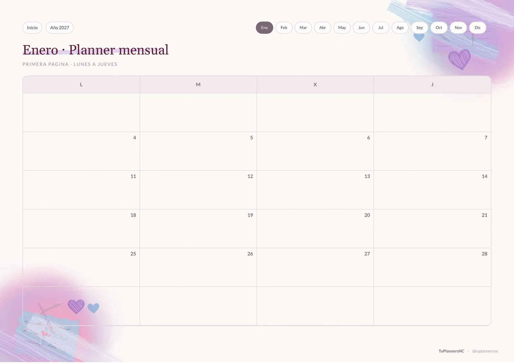
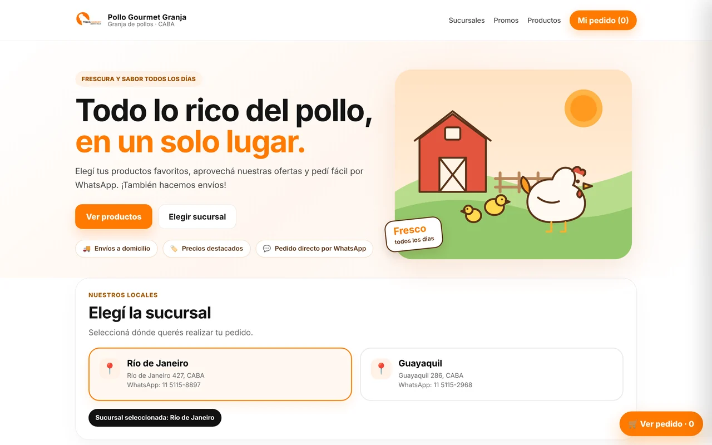

Desarrollo web · Backend · Automatización
Cómo construyo soluciones reales
Una mirada técnica a proyectos propios, productos digitales y trabajos para negocios. Cada caso explica el problema, mi trabajo y las tecnologías usadas. En algunos proyectos el código es privado para proteger datos y funcionalidades comerciales.
01 · Backend y automatización
Chuli Facturador
MVP de facturación electrónica por lotes, actualmente en ambiente de homologación.
El desafío
Evitar la carga manual repetitiva de comprobantes y poder identificar ventas procesadas, duplicados y errores.
Cómo lo resolví
Desarrollé un backend en Python y FastAPI que recibe ventas en CSV, prepara Facturas C mediante los servicios de ARCA y registra los movimientos en SQLite. El sistema contempla control de duplicados por número de orden, registro de eventos, errores temporales y reproceso de pendientes.
Lo que demuestra
- Procesamiento de datos tabulares con Pandas
- Integración con servicios externos y configuración por entorno
- Validación, trazabilidad y manejo de reintentos
La demo pública no contiene las credenciales ni el backend privado de facturación.

02 · Aplicación Full Stack
Mi Cuaderno Digital
Cuadernos personalizados, edición de páginas y sincronización por cuenta.
El desafío
Ofrecer una herramienta de estudio que funcione en computadora, tablet y celular, con diferentes formatos de hojas, imágenes y escritura.
Cómo lo construí
La aplicación utiliza React, Next.js y TypeScript. Para autenticación, datos e imágenes usa Supabase (PostgreSQL y Storage), con políticas RLS para separar la información de cada usuario. Incluye herramientas de edición, búsqueda de apuntes, exportación en PDF y una experiencia instalable como PWA.
Aspectos técnicos
- Componentes de interfaz y edición de contenido
- Autenticación y permisos por usuario
- Sincronización y respaldo local ante interrupciones de conexión
Repositorio privado: los cuadernos de usuarios, accesos y configuraciones sensibles no se exponen en esta muestra.

03 · PWA y gestión académica
Mi Progreso Académico
Organización de materias, tareas y exámenes en una sola aplicación.
El desafío
Reunir información académica que suele quedar dispersa entre calendarios, apuntes, mensajes y planillas.
Cómo lo construí
Creé una aplicación web con JavaScript que permite registrar materias, cursadas, tareas, evaluaciones y notas, con buscador global y calendario. Integra Google OAuth y Supabase para autorización y sincronización de datos por usuario. Incluye manifest y Service Worker para instalación como PWA y soporte offline básico.
Aspectos técnicos
- Autenticación y datos asociados a cada cuenta
- Filtros, búsqueda, vistas de calendario y exportación
- Diseño responsive y funcionamiento instalable
El acceso a la aplicación es privado y requiere autorización. Se muestran capturas, no información académica personal.

04 · Generación automatizada
Agenda Interactiva 2027
Un generador en Python produce un documento de 481 páginas enlazadas.
El desafío
Construir una agenda extensa con navegación coherente sin diseñar manualmente cientos de páginas y vínculos.
Cómo lo resolví
Programé un generador con Python, Jinja2 y WeasyPrint. A partir de plantillas, construye vistas anuales, mensuales y diarias, con enlaces para navegar entre ellas. Se puede generar una muestra breve, validar la navegación y elegir versiones optimizadas para pantalla o impresión.
Datos del proyecto
- 481 páginas generadas
- 365 páginas diarias y 12 carátulas mensuales
- Pruebas del generador y verificación de enlaces internos
Es un PDF navegable para aplicaciones de anotación; los espacios de escritura no son campos de formulario AcroForm.

05 · Desarrollo para un negocio
Pollo Gourmet Granja
Catálogo de pedidos para dos sucursales, en desarrollo.
El desafío
Facilitar la selección de productos, cantidades y sucursal antes de enviar una consulta, evitando pedidos incompletos por mensaje.
La solución
Diseñé una tienda responsive con selección de sucursal, categorías, buscador y carrito. La página prepara un pedido organizado con productos y cantidades para enviarlo por WhatsApp a la sucursal seleccionada. El catálogo mostrado en el portfolio contempla 61 productos.
Enfoque técnico
- Experiencia móvil y proceso de pedido claro
- Validación de cantidad, elección de sucursal y armado del mensaje
- Catálogo y componentes visuales reutilizables
Proyecto privado en desarrollo; las imágenes son una vista previa y no confirman disponibilidad comercial.
